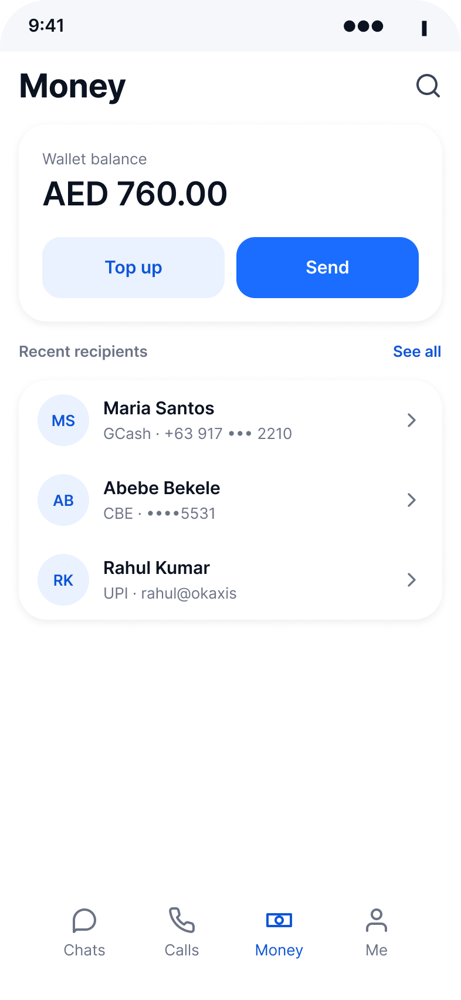
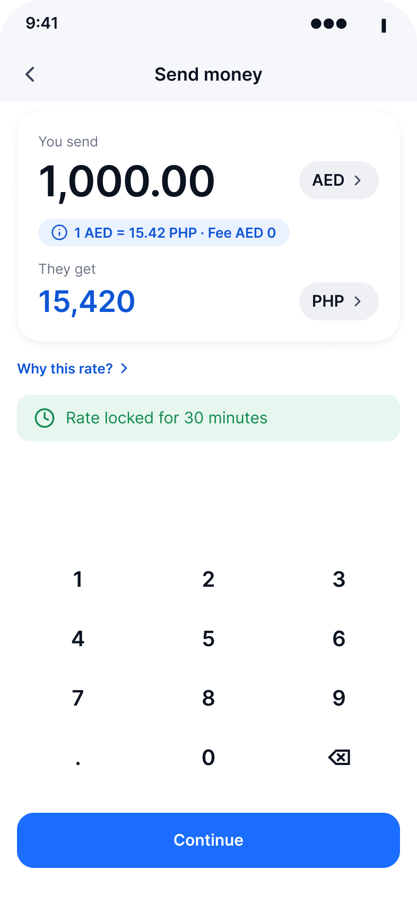
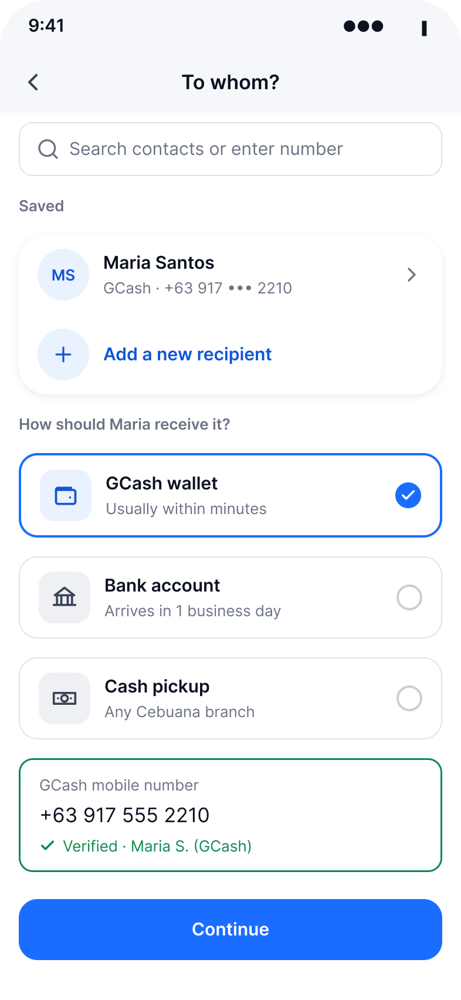
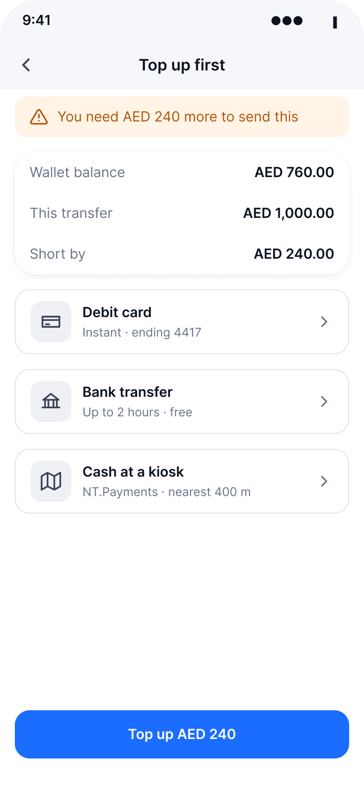
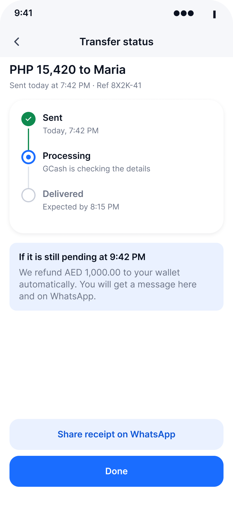
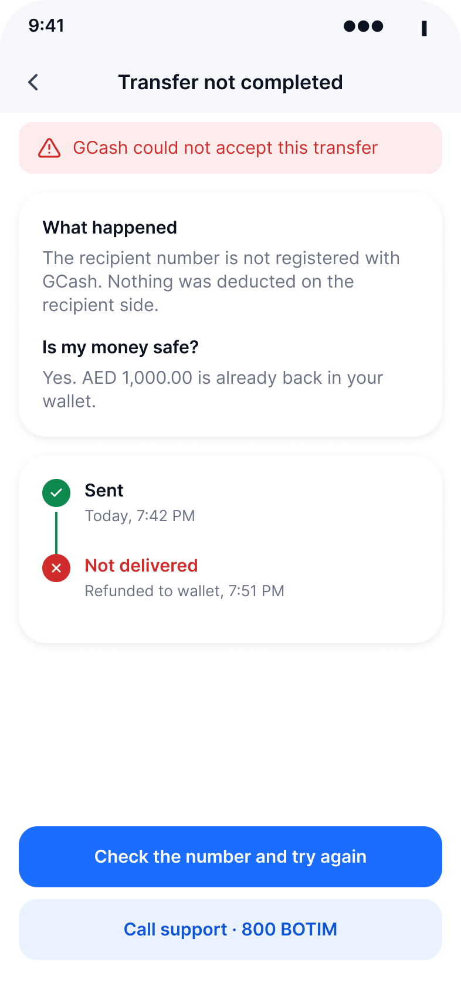
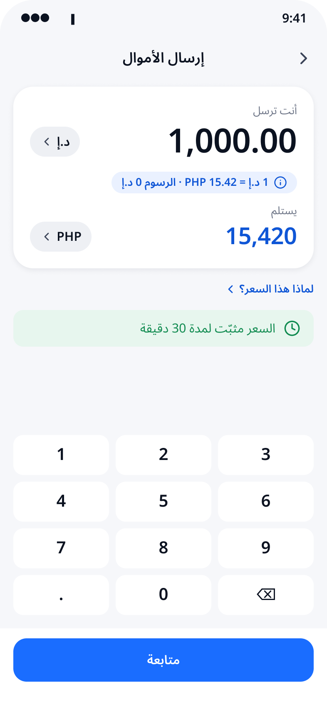
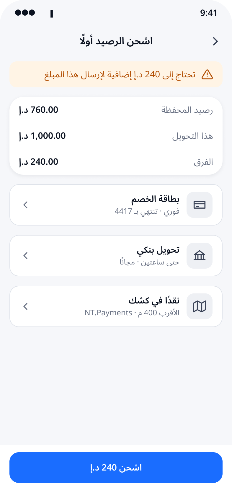
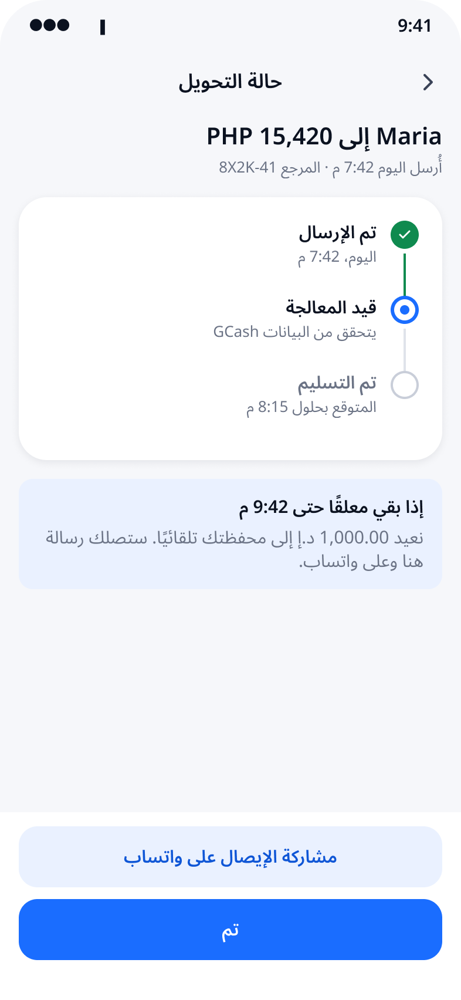

Work / Consumer fintech / Remittance
botim, send money
botim is the UAE's everyday app for calls, chat and, increasingly, money. I redesigned one flow, the first international transfer to a new recipient with a top-up on the way, in English and Arabic, so that the number senders care about, what arrives on the other end, is the first thing they see and the last thing they confirm.
Independent and unsolicited. Not affiliated with botim or Astra Tech. Built from the public app, published fact statements and press. A prototype, not a shipped product.
The review screen in both languages. Recipient amount biggest, fee and rate on the same screen, and the button says the exact amount leaving the wallet.
The flow the business is betting on
botim started as the UAE's free calling app and now has more than 150 million users. Since the PayBy rebrand to botim money it has been adding remittance corridors fast: GCash for the Philippines, CBE for Ethiopia, Mastercard Move for 150+ countries. International send-money is where the product is investing.
Two things in botim's own published material shaped the brief. The international transfer FAQ says the rate and fees appear after the sender enters an amount and a destination. And the Key Facts Statement says a transfer is declined if the wallet is not funded first. So the two moments that matter most to a sender, "what will arrive" and "do I have enough", are both answered late.
The audience is mostly migrant workers sending a fixed amount home on a fixed day. One unclear fee, one failed step, costs them a day and sometimes the money. That is why I picked one journey and did it properly rather than touching the whole app.
The right number, in the wrong place
Senders don't commit because the number they care about, what arrives on the other end, shows up last and in the sender's currency. Everything else in the redesign follows from fixing that one sentence.
The person I designed for is the weekly sender: AED 1,000 to a GCash wallet on a Friday, one hand on the phone, the other on a bus rail, Arabic or English interface depending on who set the phone up. That persona is an assumption built from public evidence, not from interviews yet. The interview script and the recruiting plan are ready; they are the next step.
Top up inside the flow, or bounce them out
A sender with an empty wallet is the common case, not the edge case. Today the wallet gate sits in front of the send flow: fund first, then come back. I moved funding inside the flow, as one screen that says exactly how much is missing and offers the three ways to close the gap: card, bank transfer, cash at a kiosk.
What I chose
Inline shortfall. The screen says "You need AED 240 more", shows wallet balance, transfer total and the gap as three plain rows, and the button says "Top up AED 240". Nothing about the transfer is lost.
What I rejected
A separate top-up task. It keeps the send flow light, but it asks the sender to remember a number, leave, fund, come back and re-enter everything. For a weekly sender that is where the week slips.
What I gave up
Card entry and 3DS now live inside a flow that was meant to feel short. The shortfall screen adds a step for the minority who are already funded if the balance check is wrong, and KYC states multiply.
How I'd find out I was wrong
A/B the inline shortfall against the bounce-out with completion of first send as the metric, and watch for a rise in abandoned card entries. If inline loses, the fix is a lighter default (bank transfer first, card second), not a return to the gate.
The second decision, fee and rate on the amount screen rather than at review, was easier. It costs a little space on the happy path and kills the drop-off at confirmation. The rate chip sits between the two amounts and opens a "why this rate" sheet, so a sender who has been burned before can check without leaving.
Seven screens, every branch covered
Amount first, then recipient. Exchange houses ask "how much" first, and the senders this flow is for think in amounts, not contacts. Recipient-first is the app convention, and I'd test it, but the default follows the counter.
| Screen | What it settles | Branches handled |
|---|---|---|
| 01 | Money home: balance, Send, last three recipients as one tap | empty wallet, no recipients yet |
| 02 | Amount: sender pays and recipient gets side by side, rate and fee visible before typing | rate lock, corridor without a fee |
| 03 | Recipient: saved or new, payout method chosen by corridor, inline validation | wallet · bank · cash pickup, unverified number |
| 04 | Shortfall: how much is missing and the three ways to close it | funded · short · KYC incomplete |
| 05 | Review: recipient-gets biggest, fee, rate, arrival, passcode | rate expired |
| 06 | Status: a timeline the sender can trust, with "what to do if" built in | pending · delivered · share receipt |
| 07 | Failure: what happened, is my money safe, what next, who to call | refunded · retry · support |






Arabic as a layout, not a translation
Half the value of this flow is in Arabic. Translating strings and flipping the text alignment breaks three things on nearly every money screen, so every component in the system ships as a pair, lang=EN and lang=AR, with the mirrored layout built in rather than applied afterwards.
- Mixed-direction amounts. "AED 1,000.00" inside an Arabic sentence reads backwards unless the number is isolated. Amounts and phone numbers are Latin-digit islands with the currency symbol (د.إ) placed after them, which is how receipts in the UAE actually read.
- Direction of progress. Chevrons, the back arrow and the status timeline mirror. The timeline's dots and connector move to the right edge, with the text column filling leftwards.
- Numerals. The keypad and all amounts use Western digits in both languages. UAE banking apps are split on this; I chose the digits printed on dirham notes and card receipts. It is a stated decision, and one I'd test with Arabic-first senders.



Money components, paired by language
I kept botim's visual language where it works, blue on white, rounded cards, lowercase voice, and added the components a money flow needs that a chat app never did. Everything is variables, so when the audited brand values replace my approximations every screen updates at once.
- AmountInput: dual currency, sender amount at 40pt, recipient amount at 28pt in brand blue, rate chip between.
- RateChip: rate and fee in one pill, tap for "why this rate".
- PayoutMethod: bank, wallet, cash pickup; default and selected states.
- TimelineStep: done, current, pending, failed; the subtitle carries the "what to do if" copy.
- Banner: success, warning, error; the same three used for rate lock, shortfall and failure.
- Plus RecipientRow, TopUpMethod, KeyValueRow, buttons, nav and status bar. 12 sets, 36 variants, every one with an Arabic twin.

One hand, on a bus
Senders use this one-handed, often in bright light, often on an older Android. So: every tap target is at least 44pt and the primary button is 52pt; amounts and buttons pass AA contrast against white and the tinted blue; the two numbers that matter are the largest text on the screen and still fit at 200% text size; focus order follows the reading order in both directions; and nothing is communicated by colour alone, the failed step has an icon and the words "Not delivered".
Three tests, four numbers
With access to real data, I'd run these before anything else:
- Inline shortfall vs separate top-up. Metric: completion of first international send.
- Fee and rate on the amount screen vs at review. Metric: drop-off between amount and review.
- Amount-first vs recipient-first. Metric: time to the review screen for new recipients.
And the four numbers I'd watch every week: completion rate, time to first send, repeat send within 7 days, and support tickets that contain the word "pending".
Honest gaps
- I don't know botim's real drop-off points. The problem statement is built from how the published flow is described and from what remittance senders say elsewhere, not from botim's funnel.
- The brand values are approximations. The structure is right, the exact blue is not, until the live app is audited.
- Rate locks, refund timing and the "2 hours" promise on the status screen are design intent. Whether the partner rails can honour them is a question for the payments team, and the copy would change with the answer.
- No one has used this yet. The interview script and validation plan exist; the numbers don't, and this page won't show any until they do.
Show the number they care about first. Everything else is layout.the one-line brief